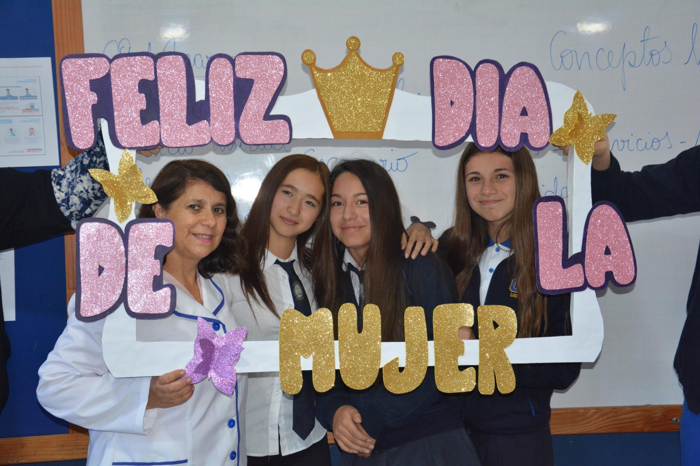
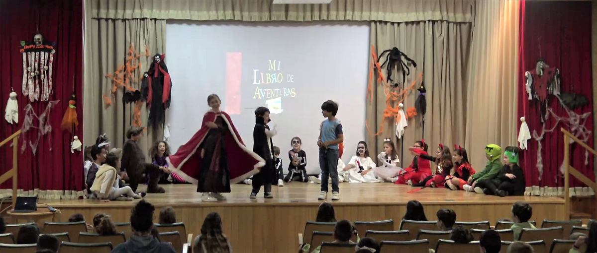
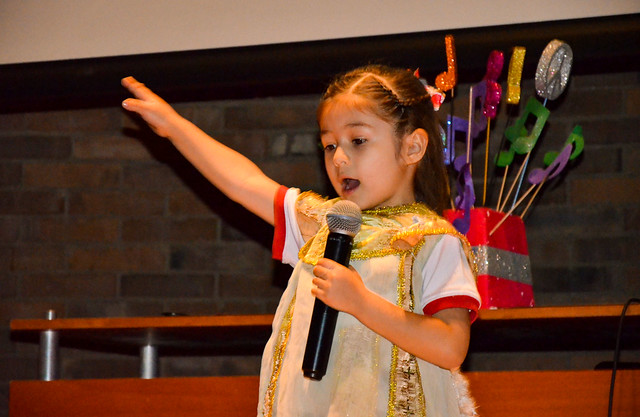
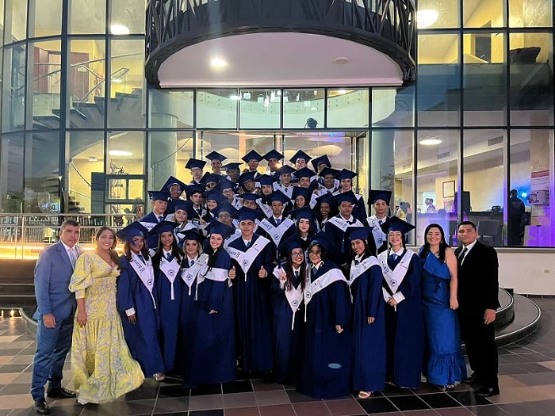
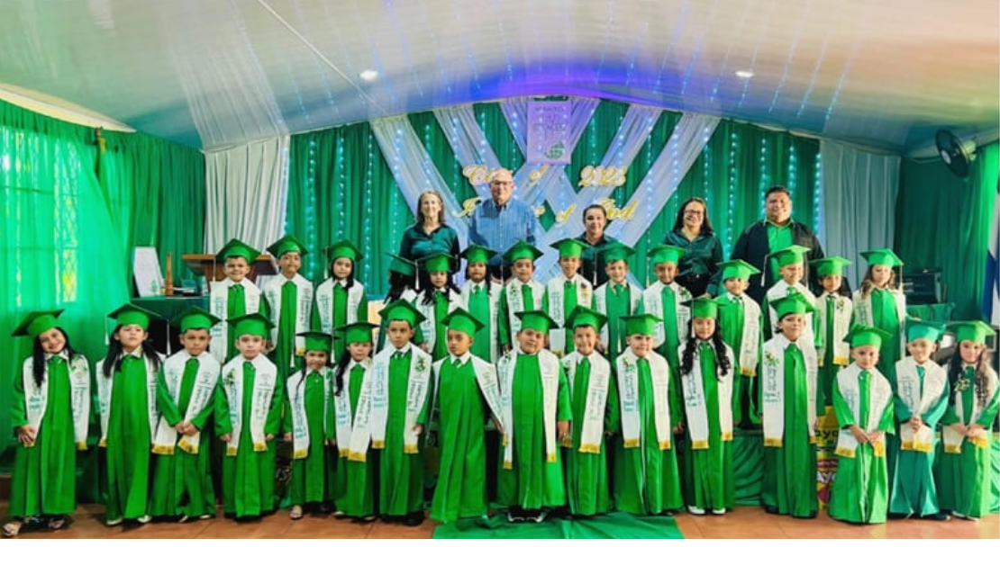

NOTICIAS
Noticias y actividades de nuestra Comunidad Educativa

Colegio SGAPA
Celebración día de la Mujer 2025
07-Marzo-2025

Colegio SGAPA
Celebración día del Maestro 2025
15-Mayo-2025

Colegio SGAPA
Celebración día del estudiante 2025
30-Mayo-2025

Colegio SGAPA
Festival de Talentos 2025
06-Junio-2025

Colegio SGAPA
Graduación Bachilleres 2024
6-Dic-2024

Colegio SGAPA
Grados Primaria 2024
2-Dic-2024
Colegio SGAPA
Día de la Familia 2024
8-Feb-2024